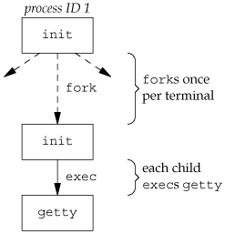
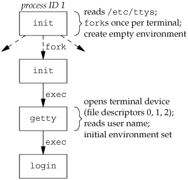

9.2. Terminal LoginsLet's start by looking at the programs that are executed when we log in to a UNIX system. In early UNIX systems, such as Version 7, users logged in using dumb terminals that were connected to the host with hard-wired connections. The terminals were either local (directly connected) or remote (connected through a modem). In either case, these logins came through a terminal device driver in the kernel. For example, the common devices on PDP-11s were DH-11s and DZ-11s. A host had a fixed number of these terminal devices, so there was a known upper limit on the number of simultaneous logins. As bit-mapped graphical terminals became available, windowing systems were developed to provide users with new ways to interact with host computers. Applications were developed to create "terminal windows" to emulate character-based terminals, allowing users to interact with hosts in familiar ways (i.e., via the shell command line). Today, some platforms allow you to start a windowing system after logging in, whereas other platforms automatically start the windowing system for you. In the latter case, you might still have to log in, depending on how the windowing system is configured (some windowing systems can be configured to log you in automatically). The procedure that we now describe is used to log in to a UNIX system using a terminal. The procedure is similar regardless of the type of terminal we useit could be a character-based terminal, a graphical terminal emulating a simple character-based terminal, or a graphical terminal running a windowing system. BSD Terminal LoginsThis procedure has not changed much over the past 30 years. The system administrator creates a file, usually /etc/ttys, that has one line per terminal device. Each line specifies the name of the device and other parameters that are passed to the getty program. One parameter is the baud rate of the terminal, for example. When the system is bootstrapped, the kernel creates process ID 1, the init process, and it is init that brings the system up multiuser. The init process reads the file /etc/ttys and, for every terminal device that allows a login, does a fork followed by an exec of the program getty. This gives us the processes shown in Figure 9.1. Figure 9.1. Processes invoked by init to allow terminal logins All the processes shown in Figure 9.1 have a real user ID of 0 and an effective user ID of 0 (i.e., they all have superuser privileges). The init process also execs the getty program with an empty environment. It is getty that calls open for the terminal device. The terminal is opened for reading and writing. If the device is a modem, the open may delay inside the device driver until the modem is dialed and the call is answered. Once the device is open, file descriptors 0, 1, and 2 are set to the device. Then getty outputs something like login: and waits for us to enter our user name. If the terminal supports multiple speeds, getty can detect special characters that tell it to change the terminal's speed (baud rate). Consult your UNIX system manuals for additional details on the getty program and the data files (gettytab) that can drive its actions. When we enter our user name, getty's job is complete, and it then invokes the login program, similar to
execle("/bin/login", "login", "-p", username, (char *)0, envp);
(There can be options in the gettytab file to have it invoke other programs, but the default is the login program.) init invokes getty with an empty environment; getty creates an environment for login (the envp argument) with the name of the terminal (something like TERM=foo, where the type of terminal foo is taken from the gettytab file) and any environment strings that are specified in the gettytab. The -p flag to login tells it to preserve the environment that it is passed and to add to that environment, not replace it. Figure 9.2 shows the state of these processes right after login has been invoked. Figure 9.2. State of processes after login has been invoked All the processes shown in Figure 9.2 have superuser privileges, since the original init process has superuser privileges. The process ID of the bottom three processes in Figure 9.2 is the same, since the process ID does not change across an exec. Also, all the processes other than the original init process have a parent process ID of 1. The login program does many things. Since it has our user name, it can call getpwnam to fetch our password file entry. Then login calls getpass(3) to display the prompt Password: and read our password (with echoing disabled, of course). It calls crypt(3) to encrypt the password that we entered and compares the encrypted result to the pw_passwd field from our shadow password file entry. If the login attempt fails because of an invalid password (after a few tries), login calls exit with an argument of 1. This termination will be noticed by the parent (init), and it will do another fork followed by an exec of getty, starting the procedure over again for this terminal. This is the traditional authentication procedure used on UNIX systems. Modern UNIX systems have evolved to support multiple authentication procedures. For example, FreeBSD, Linux, Mac OS X, and Solaris all support a more flexible scheme known as PAM (Pluggable Authentication Modules). PAM allows an administrator to configure the authentication methods to be used to access services that are written to use the PAM library. If our application needs to verify that a user has the appropriate permission to perform a task, we can either hard code the authentication mechanism in the application, or we can use the PAM library to give us the equivalent functionality. The advantage to using PAM is that administrators can configure different ways to authenticate users for different tasks, based on the local site policies. If we log in correctly, login will
The login program really does more than we've described here. It optionally prints the message-of-the-day file, checks for new mail, and performs other tasks. We're interested only in the features that we've described. Recall from our discussion of the setuid function in Section 8.11 that since it is called by a superuser process, setuid changes all three user IDs: the real user ID, effective user ID, and saved set-user-ID. The call to setgid that was done earlier by login has the same effect on all three group IDs. At this point, our login shell is running. Its parent process ID is the original init process (process ID 1), so when our login shell terminates, init is notified (it is sent a SIGCHLD signal), and it can start the whole procedure over again for this terminal. File descriptors 0, 1, and 2 for our login shell are set to the terminal device. Figure 9.3 shows this arrangement. Figure 9.3. Arrangement of processes after everything is set for a terminal login
Our login shell now reads its start-up files (.profile for the Bourne shell and Korn shell; .bash_profile, .bash_login, or .profile for the GNU Bourne-again shell; and .cshrc and .login for the C shell). These start-up files usually change some of the environment variables and add many additional variables to the environment. For example, most users set their own PATH and often prompt for the actual terminal type (TERM). When the start-up files are done, we finally get the shell's prompt and can enter commands. Mac OS X Terminal LoginsOn Mac OS X, the terminal login process follows the same steps as in the BSD login process, since Mac OS X is based in part on FreeBSD. With Mac OS X, however, we are presented with a graphical-based login screen from the start. Linux Terminal LoginsThe Linux login procedure is very similar to the BSD procedure. Indeed, the Linux login command is derived from the 4.3BSD login command. The main difference between the BSD login procedure and the Linux login procedure is in the way the terminal configuration is specified. On Linux, /etc/inittab contains the configuration information specifying the terminal devices for which init should start a getty process, similar to the way it is done on System V. Depending on the version of getty in use, the terminal characteristics are specified either on the command line (as with agetty) or in the file /etc/gettydefs (as with mgetty). Solaris Terminal LoginsSolaris supports two forms of terminal logins: (a) getty style, as described previously for BSD, and (b) ttymon logins, a feature introduced with SVR4. Normally, getty is used for the console, and ttymon is used for other terminal logins. The ttymon command is part of a larger facility termed SAF, the Service Access Facility. The goal of the SAF was to provide a consistent way to administer services that provide access to a system. (See Chapter 6 of Rago [1993] for more details.) For our purposes, we end up with the same picture as in Figure 9.3, with a different set of steps between init and the login shell. init is the parent of sac (the service access controller), which does a fork and exec of the ttymon program when the system enters multiuser state. The ttymon program monitors all the terminal ports listed in its configuration file and does a fork when we've entered our login name. This child of ttymon does an exec of login, and login prompts us for our password. Once this is done, login execs our login shell, and we're at the position shown in Figure 9.3. One difference is that the parent of our login shell is now ttymon, whereas the parent of the login shell from a getty login is init. |